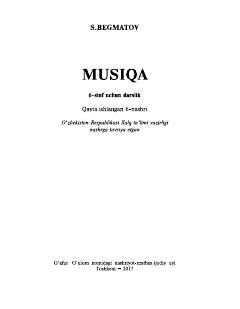

M66-sinf o'quvchilari uchun mo'ljallangan musiqa darsligi.
Mazkur 6-sinf musiqa darsligida mumtoz va xalq musiqa ijodiyoti, Sharq hamda jahon xalqlari musiqasi, shuningdek, zamonaviy estrada musiqasi haqida batafsil ma'lumotlar berilgan. Kitob o'quvchilarda milliy va umuminsoniy madaniyatni idrok etish, musiqiy merosni anglash hamda Vatanga muhabbat tuyg'ularini shakllantirishga xizmat qiladi.